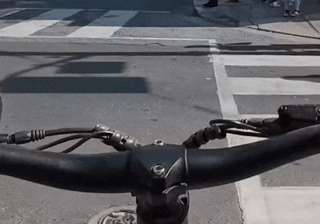
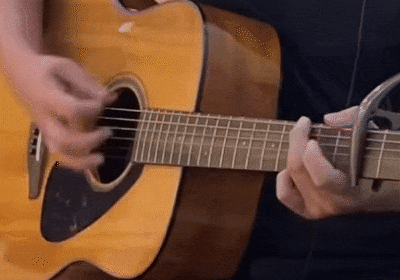
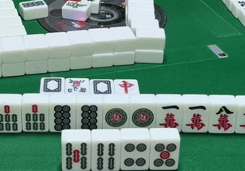
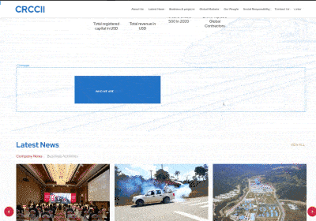

experiences
2022 - Now
Sun Life
Senior UX Designer
2021 - 2022
DigiSalad
UI UX Designer
2019 - 2021
Flips Digital
Digital Designer
2017 Summer
Yello Limited
Graphic Designer Intern
Let’s collaborate.
© Tony Tsui 2026